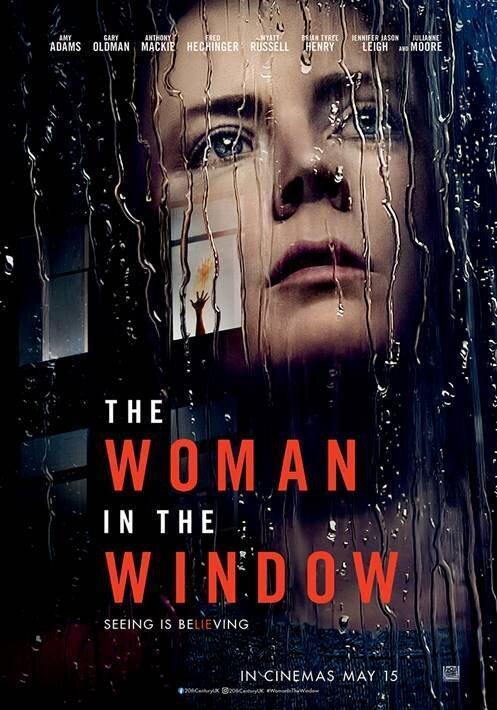

THE WOMAN IN THE WINDOW
Agoraphobic Dr. Anna Fox witnesses something she shouldn't while keeping tabs on the Russell family, the seemingly picture perfect clan that lives across the way.
Cast: Amy Adams as Dr. Anna Fox, Gary Oldman as Alistair Russell, Anthony Mackie as Edward Fox, Fred Hechinger as Ethan Russell, Wyatt Russell as David Winter,Brian Tyree Henry as Det. Little, Julianne Moore as "Jane Russell"/Katherine Melli, Jennifer Jason Leigh as the real Jane Russell, Jeanine Serralles as Det. Norelli
PG 13
Time Slots:
8:00 - 10:30
11:00 - 13:00
14:15 - 16:20
17:00 - 20:30